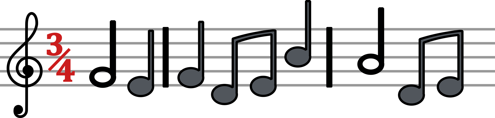

Note Durations!
Now that we know what the notes are called, let's take a look at how we use them in a beat.
This short video will show you some of the easiest note-beats to understand!
~So How About That?~
With all this in mind, you're almost ready to start writing you're own music! Still, there are one or two things we need to know before we can call ourselves master composers.
There are in fact more types of note durations, such as the semi-quaver, which is half the length of a crotchet! Isn't that fast? Well maybe not, but a semi-quaver too can be halved and halved again. If you'd like to learn more, you can look at RIAM's other video here.
The next thing to look at is the Time Signature, which is comming up next. Ready when you are!
Time Signatures!
Now that we know how long each type of note is, how do we put them all together?
This short video will show you how!
| Time Signature | Also Known As | Example |
| 4/4 | Common Time | Twinkle Twinkle Little Star |
| 3/4 | Waltz | Rock-a-bye Baby |
| 2/4 | A March | Baa, Baa, Black Sheep |